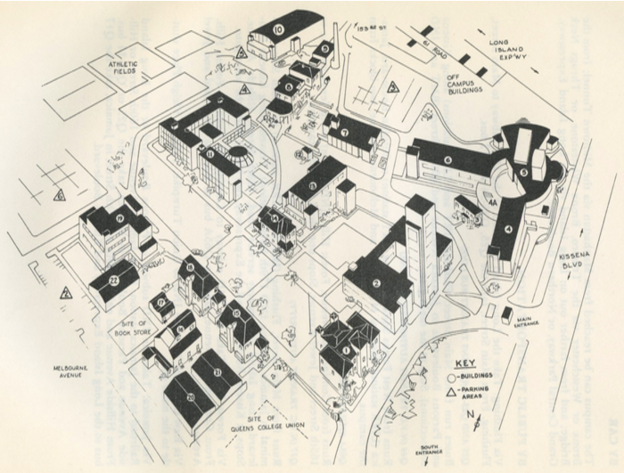

- 1
•
Jefferson Hall
- — Registrar’s Office
- — Business Office
- — Service Offices
- 2
•
Academic II
- — Administrative Offices
- — College Relations
- — Information Center
- — School of General Studies
- — Adult Continuing Education (ACE) Program
- — Adult Education Program
- — Department of Art, Classical, and Oriental Languages
- — German and Comparative Literature
- — Linguistics
- — Mathematics
- — Romance Languages
- — Slavic Languages
- 3
•
Center for International Education
- — Program of Study Abroad
- — English Language Institute
- — Foreign Student Adviser
- 4, 4a, 5, 6
•
Charles S Colden Center of Music and Speech
- 4 — Rufus King Hall (Communication Arts and Sciences Wing)
- 4a — Samuel Gertz Speech and Hearing Center
- 5 — Colden Auditorium and Queens College theatre
- 5 — Colden Auditorium and Queens College Theatre
- 6 — Karol Rathaus Hall (Music Wing)
- 7
•
Queens College Dining Hall
- 8
•
College Memorial Center
- — Lounges and Student Organization Offices
- 9
•
Heating Plant
- 10
•
Maurice FitzGerald Gymnasium
- — Department of Health and Physical Education
- 11
•
Social Sciences Building
- — Graduate Registrar
- — Educational Clinic
- — Departments of Anthropology, Economics, Education, History, Philosophy, Political
Science, Sociology, Student Personnel
- 12
•
Architectural and Engineering
- 13
•
Paul Klapper Library
- — Bookstore
- — Central Receiving
- 14
•
Graduate Biology Laboratories
- — University of the Air
- — Offices
- 15
•
Department of Physics
- 17
•
Annex
- 18
•
Department of Biology
- 19
•
Ira Remsen Hall
- — Departments of Chemistry, Geology, Home Economics, Psychology
- 20
•
Temporary II
- 21
•
Temporary I
- — Computer Center
- — Offices
- 22
•
Temporary III
- — SEEK Offices
- — Psychology Laboratories and Machine Shop
- — City University Mutual Benefit Instructional Network (CUMBIN)
- Electrical Industries Building (E1B), 185-11 Jewel Avenue
- — Department of Nursing
- — Biology, Geology, Home Economics Laboratories
- Off-campus Buildings, 61 Road
- — Alumni Office
- — Archaeology
- — SEEK
- — Institute for Community Studies
- — Latin American Area Studies
- — Teacher Placement
{kind=link}